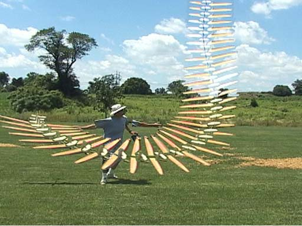

High-performance DLG / F3K database

Multiple-image overlay of a DLG launch. Note yaw oscillation
– to achieve good launch height these models typically need
large vertical tail volume coefficients, and also need to be light,
stiff and streamlined. To compensate for high tail side-loads on
launch, a stiff fuselage and tail linkages are needed and in general,
stiffer models launch higher.
Below is a compilation of data for different models, subjectively
assessed as the best available in the market as of early
2010.
As supplied
| Model |
Wing mass (1) |
Fuselage mass (2) |
Tail group mass |
Major component mass |
Wing area (3) |
Wing section |
Approx price (4) |
Remarks |
| SALpeter (base) |
123 |
35 |
17 (includes stab mount) |
175 |
22.0 |
AH-84 |
400 (estimate) |
Moulded 1-piece wing |
| Blaster (light
wing variant) |
150 |
47 |
18 |
215 |
24.0 |
AG45–46–47 |
350 |
Moulded 1-piece wing |
| Taboo GT |
108 |
46 (includes fin, stab mount, control runs) |
6 (stab only) |
160 |
23.1 |
AG45c–46c–47c |
450 |
Bagged 2-piece wing |
Notes
- Masses in gm: 1oz=28.35gm. Where possible these are average
values and represent those in the delivered state. Major component
mass is the sum of the other three values.
- Fuselage masses include boom.
- Areas in dm2: 1dm2=15.5in2.
- Prices quoted in $US are indicative internet prices.
- Mark Drela's Supergee II is the `gold standard', the basis for
many other designs. No widely-available kits exist. Masses are
those quoted on Mark's plans.